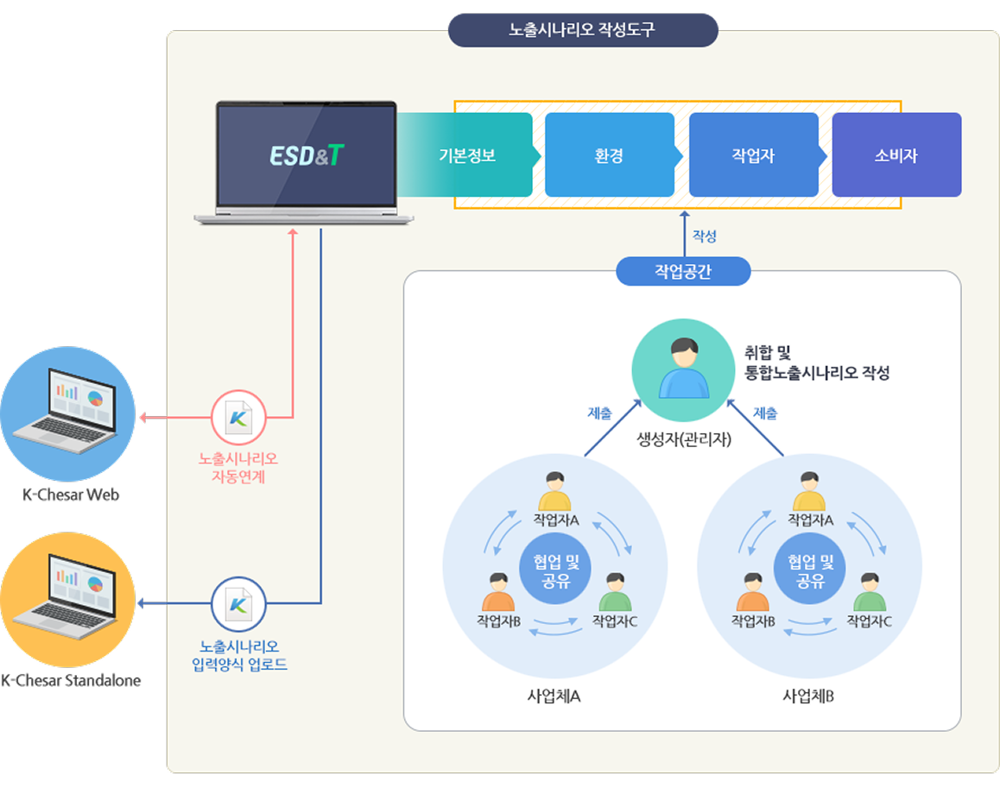

ESD&T 소개
프로그램 개요
프로그램명
노출시나리오 작성도구 (ESD&T)
ESD&T : Exposure Scenario Documents and Tool
위해성자료 작성을 위한 양질의 노출시나리오 조사와 공급망 내 정보 전달을 지원하는 웹 기반의 프로그램
배경 및 목적
- 화학물질안전정보를 서식(화평법 시행규칙 별지 제27호)에 따라 작성 및 제공하여야 하나, 노출평가 및 위해성평가에 필요한 변수를 조사하기에 부족
- 컨설팅 사 마다 별도의 양식(Excel, 웹 페이지 등)을 활용하므로 기업 입장에서는 다양한 형태에 맞추기 어려움
→ 산업계의 노출시나리오 작성의 부담을 완화하기 위하여 개발
ESD&T 특징
1. 노출시나리오 예시 탑재
ESD&T에 탑재되어 있는 노출시나리오 예시 불러오기 기능을 통하여 노출시나리오 작성
2. 협업 및 공유기능
사업체 내 구성원과 협업을 통하여 노출시나리오 작성 및 공유 가능
3. 취합기능
노출시나리오 제출 및 취합기능을 이용하여 하위사용자의 노출시나리오 취합 가능 및 효율성 극대화
4. 위해성자료 작성지원 프로그램(K-Chesar) 연계기능
K-Chesar 업로드양식 다운로드 및 자동연계를 통한 손쉬운 노출평가 수행
ESD&T 구성도
